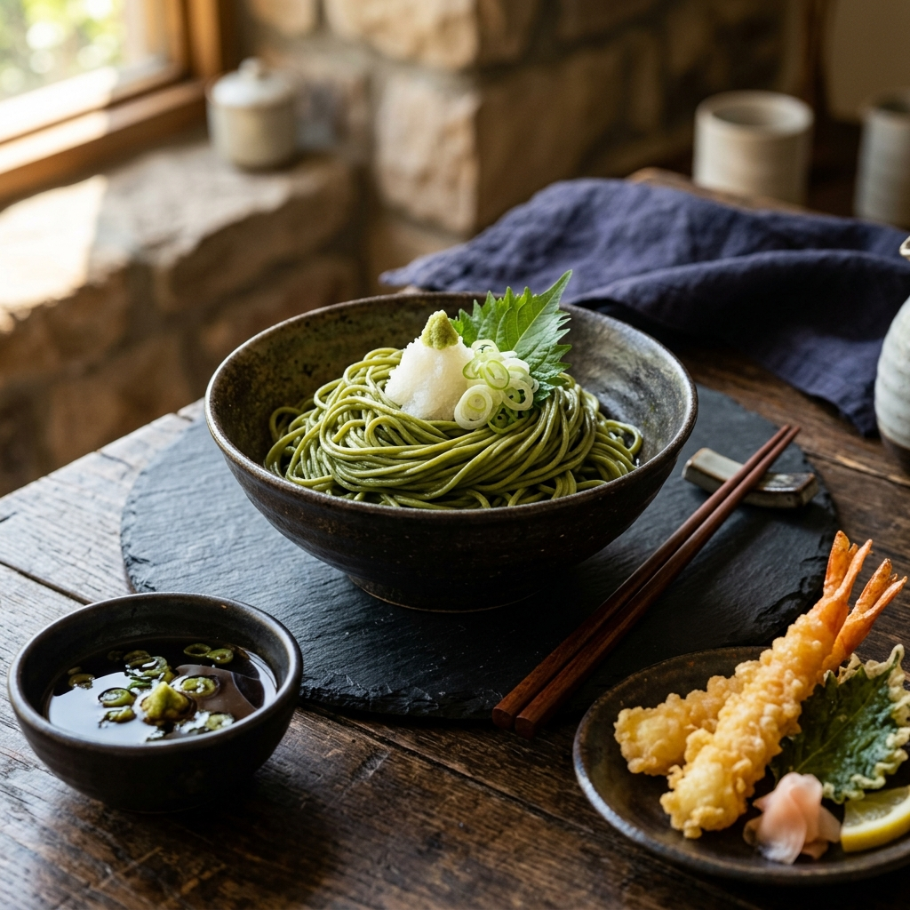
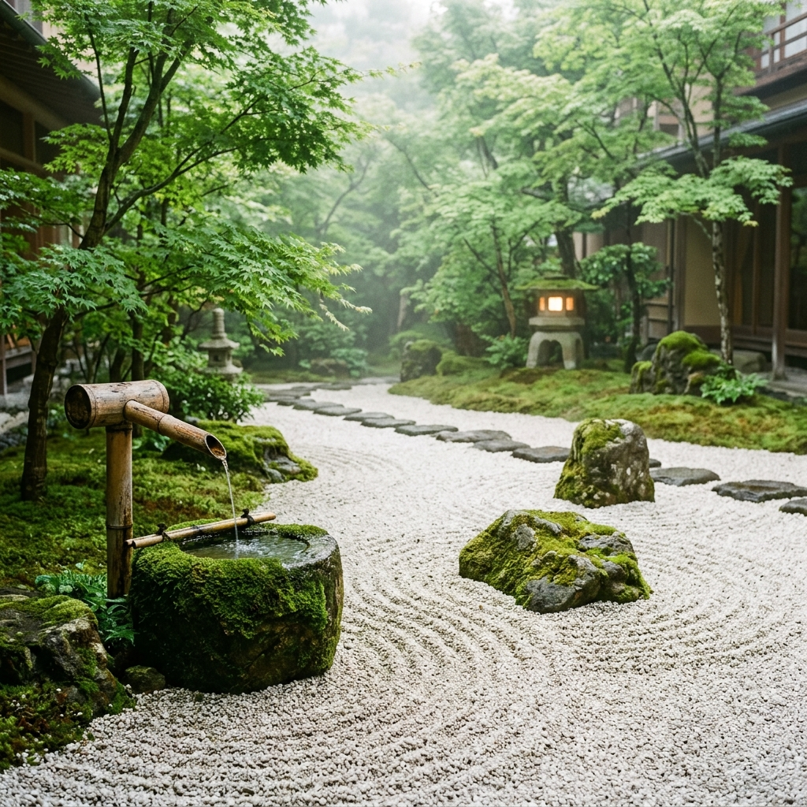

Nơi giao thoa giữa
Trà Đạo & Ẩm Thực
Hành trình trải nghiệm nghệ thuật Umami độc bản, kết hợp tinh hoa ẩm thực truyền thống Nhật Bản cùng hương vị thanh khiết của bột trà xanh Uji hảo hạng được xay bằng cối đá cổ truyền.

Uji Matcha Thượng Hạng
Nhập khẩu trực tiếp từ Kyoto

Triết Lý Wabi-Sabi
Tìm thấy vẻ đẹp hoàn mỹ trong những điều giản đơn, mộc mạc và tĩnh lặng nhất của tự nhiên.
Nghệ Thuật Cân Bằng Giữa Hương & Vị
Tại Miyabi Matcha Bistro, mỗi món ăn là một tác phẩm nghệ thuật cân bằng giữa vị ngọt thanh, vị đắng dịu từ trà xanh Uji Matcha nguyên chất và vị ngọt đằm tự nhiên (Umami) từ những nguyên liệu tươi ngon nhất trong ngày.
Chúng tôi tôn trọng dòng chảy tự nhiên của thời gian. Toàn bộ thực đơn được thiết kế theo mùa (Shun), đảm bảo từng cọng mì soba, từng miếng cá sashimi đều mang trọn vẹn hương sắc tinh khiết của đất trời Kyoto.
Xay Đá Thủ Công
Matcha được xay chậm bằng cối đá granite để giữ trọn vẹn hương vị tinh dầu thanh tao.
Nguyên Liệu Theo Mùa
Hải sản và nông sản được vận chuyển trực tiếp bằng đường hàng không mỗi ngày.
Nghệ Thuật Trà Đạo Cổ Truyền
Hãy tạm rời xa nhịp sống hối hả ngoài kia để bước chân vào phòng chiếu Tatami tĩnh lặng. Tại đây, bạn sẽ được thưởng lãm màn trình diễn trà đạo tinh tế từ những bậc thầy trà học, lắng nghe tiếng chổi tre Chasen khua nhẹ trong lòng bát sứ đen truyền thống, mang lại cảm giác bình yên thư thái tuyệt đối.
Đặt Chỗ Trải NghiệmĐặt Bàn Trước Để Nhận Không Gian Đẹp
Để đảm bảo trải nghiệm thưởng ẩm và trà đạo Wabi-sabi của bạn diễn ra hoàn hảo nhất, chúng tôi khuyến nghị quý khách đặt chỗ trước tối thiểu 2 tiếng trước giờ dùng bữa.
Địa Chỉ
18 Đường Hoa Trà, Phường Bến Nghé, Quận 1, TP. Hồ Chí Minh
Hotline Hỗ Trợ
+84 (0) 90 123 4567 • +84 (0) 28 8888 9999
Giờ Mở Cửa (Zen Hours)
10:00 AM - 10:00 PM (Hàng ngày, kể cả ngày lễ)